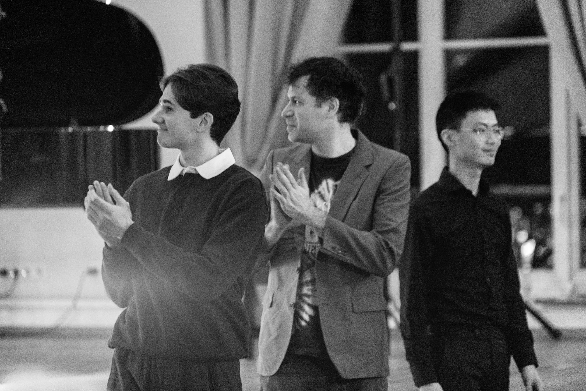

My work spans contemporary classical music, jazz, and experimental practices, often combining notated structures with open forms that invite performers to actively shape the musical outcome. Improvisation functions in my work not as decoration, but as a central compositional strategy through which freedom, authorship, and decision-making are explored. I am the creator of different proyects that you can check on this website. I also collaborate in several projects with other leaders. From Contemporary Classical music to Jazz Music and everything in between, I enjoy every musical situation and I try to do the best out of it.
My work has been presented by festivals and institutions including November Music Festival, Intro in Situ, Siena Jazz, Jazz in the Park, Transilvania Jazz Festival and many more. I hold a Master’s degree in Classical Composition and I am currently studiying my Master´s degree in Jazz Drums. I also collaborate with different educational institutions, and currently I am a lecturer at Zuyd Conservatorium Maastricht, where I teache Critical Listening, Non - Idiomatic Improvisation and some other subjects. I am also a tutor on Artistic Research. I guide students toward autonomy, creativity, and informed artistic decision-making.
